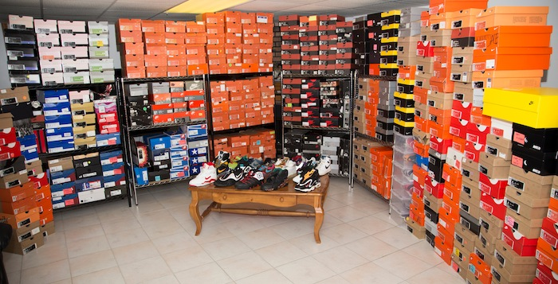

Sneakers are a way of LIFE
I been into sneakers since I was a kid. It wasn't until high school when I started taking sneaker collecting more seriously. I seen that's what really intrigued me, having the cleanest and and coolest shoes than everyone. It's one thing to just have a large quantity of sneakers and there's another thing to have a good amount of quality sneakers. Knowing the history of your sneakers or just sneakers that you know no one has is what makes you a dope collector. Bragging about sneakers everyone already has gets you know cool points.
